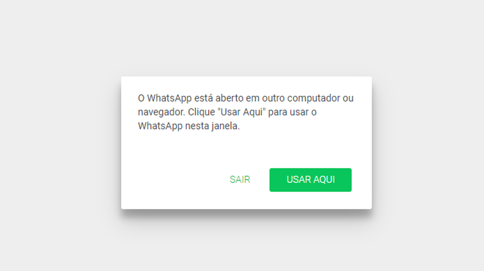

Se você já usa o WhatsApp web a algum tempo, já se deparou com um problema bem comum e que às vezes é bem chato. Quando você muda de computador e aparece a mensagem perguntando onde você quer usar o recurso.
Recentemente uma nova funcionalidade foi implementada pelo time de desenvolvimento da WhatsApp e liberada como Beta, ou seja, alguns usuários selecionados podem testar essa nova funcionalidade que permite utilizar o WhatsApp em até 04 computadores sem a necessidade do telefone estar conectado à internet.
Sim, você ainda precisará do telefone, você ainda precisará ler o QR code para fazer a conexão inicial do dispositivo. Mas, uma vez configurado o telefone não precisa estar conectado à internet, e você pode continuar mandando e recebendo mensagens se a bateria do seu celular descarregar e ele desligar completamente.
Como fazer isso?
- No celular, abra o WhatsApp e clique em “Configurações”
- Clique em “Aparelhos conectados”
- Clique em “Múltiplos aparelhos (Beta)”
- Clique em “Entrar no Beta”
Caso as opções acima não apareçam para você, infelizmente você não foi selecionado para o teste, ou seu aplicativo não está atualizado.
Fonte WhatsApp · Texto de Jefferson Lucas